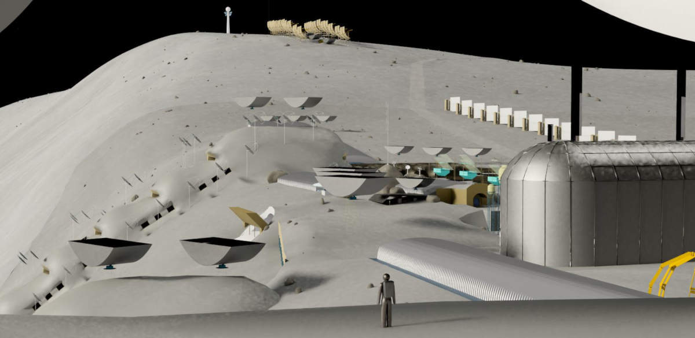

{%include headerMain.html%}
<div class="container">
	<section class="wide">
		<div class="outerDiv">
			<div class="innerDiv">
			<div class="pixHeader">
				<h2>First Flying Camera Draft of Virtual Lunar Colony</h2>
				<p>Now you can download the full colony and fly around the installations.</p>
				<table width="95%">
					<th>
						<td><a href="downloads/Moonwards-Colony-Win32.zip" download><h6>Windows 32 bit</h6></a></td>
						<td><a href="downloads/Moonwards-Colony-Win64.zip" download><h6>Windows 64 bit</h6></a></td>
							<td><a href="downloads/Moonwards-Colony-Linux.zip" download><h6>Linux</h6></a></td>
							<td><a href="downloads/Moonwards-Colony-OSX.zip" download><h6>Mac</h6></a></td>
						</th>
						</table>
		</div>
			<div class="pixBody">
			<div class="pix">
				
			</div>
		</div>
		</div>
</div>
	</section>
